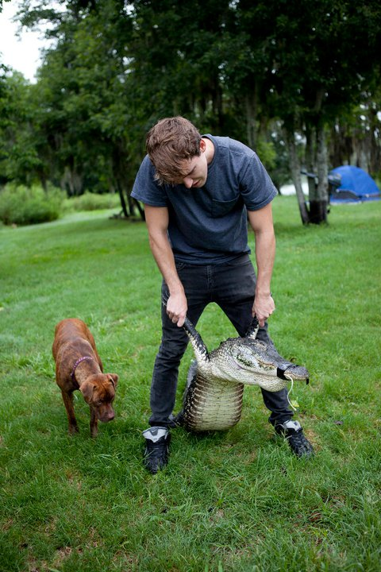

About Me
This site has been created to tell you a little bit about it's author's recent projects created at Epicodus.

Who Am I?
My name is Ted Leary. I have recently started a coding program at Epicodus in downtown Portland. I am a 29 year old Florida native who six years ago decided to up and move to the great state of Oregon. My Background
I graduated from the University of Central Florida with a Bachelor of Fine Arts in Drawing and Painting in 2011. After finishing school I moved onto a career in service and bartending. I have also worked periodically on habitat restoration teams in both the United States and New Zealand.
Hobbies and Interests
I have a lot of hobbies but the two I spend the most time involved with are rock climbing and painting.
Here's a list of my other "lesser" hobbies:
- Learning graphic design programs
- Finding new and interesting music
- Going to concerts and shows
- Cooking
- Hiking and mountaineering
- Traveling